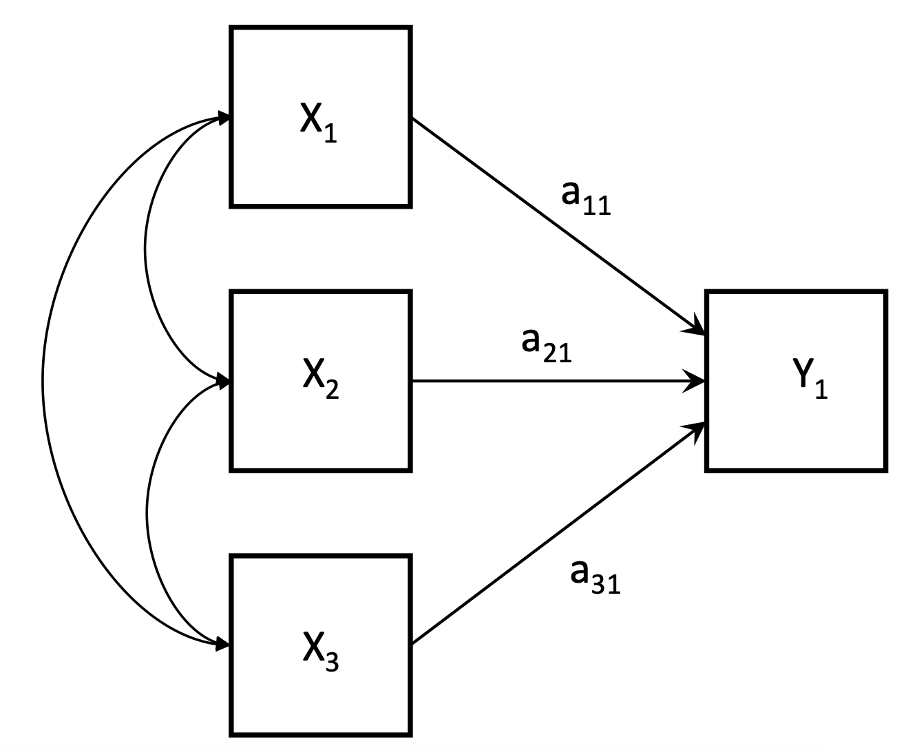
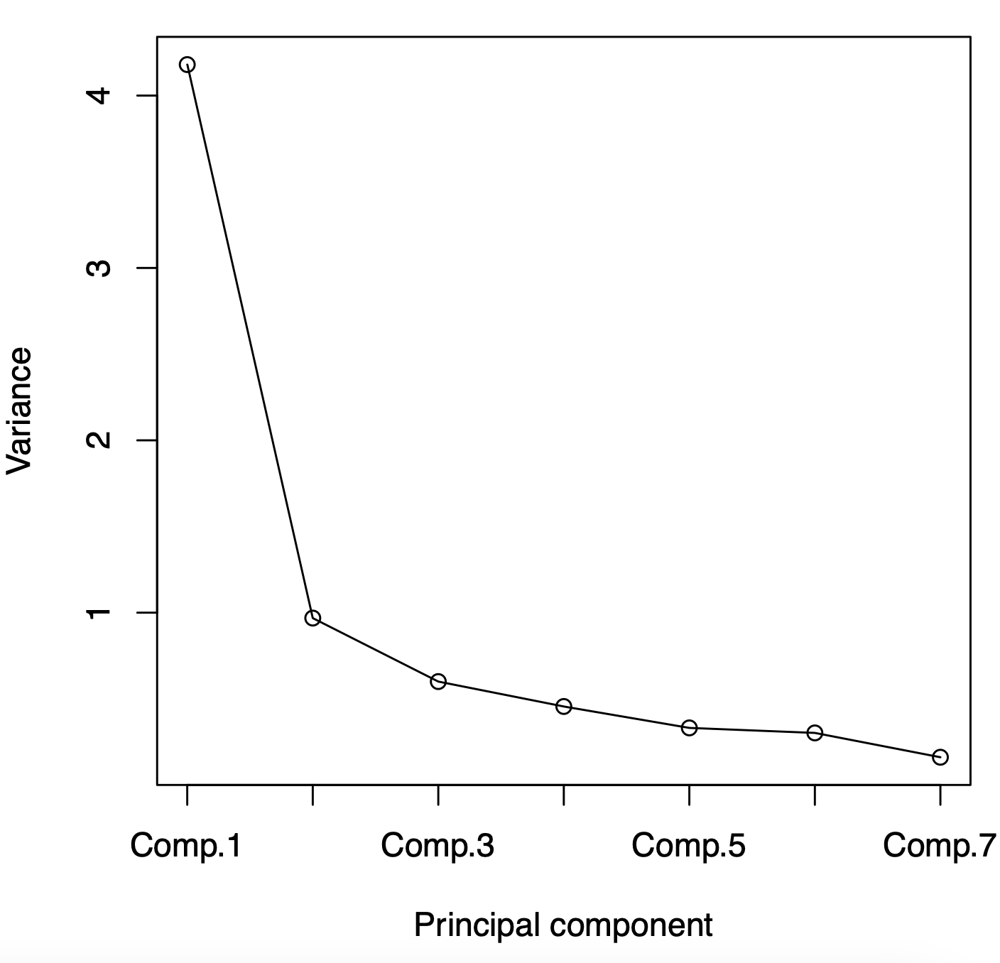
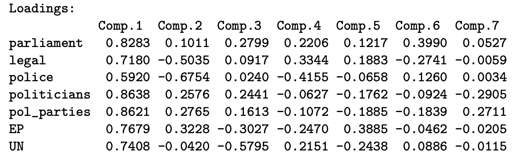
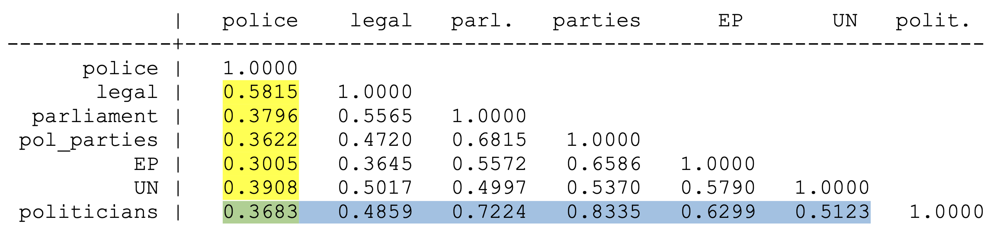

library(psych)
library(GPArotation)Unsupervised Learning Methods
Further Statistical Models
This chapter introduces unsupervised learning methods commonly used in Data Science. First, we will discuss Principle Components Analysis, a popular dimensional reduction approach. Then, we will discuss cluster analysis, a popular method of learning more about our data.
Use the right sidebar for navigation. R-code provided at the bottom.
Principle Components Analysis
Introduction
Principle Components Analysis (PCA) combines multiple observed variables into one or new observed variables (called principle components).

Example: Trust in Institutions
A survey asked respondents to respond, on a scale of 0-10, how much they trust the institutions.
- Parliament: \(x_1\)
- Legal: \(x_2\)
- Police: \(x_3\)
- Politicians: \(x_4\)
- Political Parties: \(x_5\)
- European Parliament: \(x_6\)
- United Nations: \(x_7\)
We don’t care about each variable individually. We want to summarise them into one variable that describes trust in institutions.
We can use PCA to create \(y_1\) (and \(y_2\), and more).
PCA can be used for dimensional reduction (reducing the number of variables), or for summarising multiple variables into one measure.
Observed Variables
We have \(p\) observed variables \(x_1, \dots, x_p\), measured for each unit in a sample of data.
Each of these observered variables \(x_i\) can be summarised by:
- Their sample means \(\bar x_i\).
- Their sample variances \(var(x_i)\) and standard deviations \(s_i = \sqrt{Var(x_i)}\).
- Sample correlations \(Corr(x_i, x_k)\) for each pair of observed variables \(i ≠ k\).
- Total variance of the \(p\) variables: \(Var(x_1) + Var(x_2)+ \dots + Var(x_p)\).
The sample correlations \(Corr(x_i, x_k)\) can be summarised in a covariance or correlation matrix. We notate the covariance or correlation matrix as \(\boldsymbol\Sigma\).
Below is an example of a correlation matrix between 7 variables (the same 7 in the example above).

Principle Components
PCA takes these original variables \(x_1, \dots, x_p\), and calculates a set of new variables (principle components) \(y_1, \dots, y_p\). Each principle component \(y_j\) are linear combinations of the original variables:
\[ \begin{split} y_1 = & a_{11}x_1 + a_{21}x_2 + \dots + a_{p1}x_p \\ y_2 = & a_{12}x_1 + a_{22}x_2 + \dots + a_{p2}x_p \\ & \vdots \\ y_p = & a_{1p}x_1 + a_{2p}x_2 + \dots + a_{pp}x_p \end{split} \]
With \(a_{ij}\) being the weights of the linear combinations. The sum of all the weights for each principle component should be 1: \(\sum_i a_{ij}^2 = 1\) for each \(j = 1, 2, \dots, p\).
We can rewrite each principle component \(y_j\) in terms of linear algebra:
\[ y_j = \mathbf a_j^\mathsf{T}\mathbf x = \underbrace{\begin{pmatrix} a_{1j} & a_{2j} &\dots & a_{pj} \end{pmatrix}}_{\text{weight vector for } y_i} \begin{pmatrix} x_1 \\ x_2 \\ \vdots \\ x_p \end{pmatrix} \]
And all principle components \(\mathbf y = (y_1, \dots, y_p)\) can be expressed as:
\[ \mathbf y = \mathbf A^\mathsf{T} \mathbf x, \quad \mathbf A = \begin{pmatrix} \mathbf a_1 & \mathbf a_2 & \dots & \mathbf a_p \end{pmatrix} \]
The PCs together have the same total variance as the original variables: \(\sum Var(y_i) = \sum Var(x_i)\). Thus, the PCs carry the same information/variation as the original variables, just with a different distribution. The principle components are also numbered, with each subsequent principle component having less variance: \(Var(y_j) ≥ Var(y_{j+1})\).
The principle components are all uncorrelated with each other: \(Corr(y_j , y_k) = 0, \ \forall \ j ≠ k\). This also implies a property with weights: \(\sum_i a_{ij}a_{ik} = 0\) for every pair \(j ≠ k\). Thus, the difference components convey distinct aspects of the data.
Calculating Principle Components
The weights \(a_{ij}\) are calculated from eigenvalue decomposition of the covariance matrix \(\boldsymbol\Sigma\) of variables \(x_1, \dots, x_p\).
We assume that \(\boldsymbol\Sigma\) has \(p\) distinct positive eigenvalues, denoted \(\lambda_1 > \dots, \lambda_p > 0\). Each eigenvalue corresponds to a eigenvector \(\mathbf a_j\), which serves as the weight vector for the \(i\)th principle component:
\[ \boldsymbol\Sigma \mathbf a_j = \lambda_j \mathbf a_j \]
We can apply eigenvalue decomposition to matrix \(\boldsymbol\Sigma\):
\[ \boldsymbol\Sigma = \mathbf{ADA}^{-1} \]
Where \(\mathbf Q\) is made up of the eigenvectors of matrix \(\boldsymbol\Sigma\), and \(\mathbf D\) is a diagonal matrix with the eigenvalues \(\lambda\) on its diagonals:
\[ \mathbf D = \begin{pmatrix} \lambda_1 & 0 & \dots & 0 \\ 0 & \lambda_2 & \dots & 0 \\ \vdots & \vdots & \ddots & \vdots \\ 0 & 0 & 0 & \lambda_p \end{pmatrix}, \quad \mathbf A = \begin{pmatrix} \mathbf a_1 & \mathbf a_2 & \dots & \mathbf a_p \end{pmatrix} \]
The principle components will be as follows:
\[ \mathbf y = \mathbf A^\mathsf{T} \mathbf x \]
Standardisation of Items
The results of PCA will be affected by the variances of individual variables. If \(Var(x_1) > Var(x_2)\), \(x_1\) will receive a larger weight in PCA.
This means that if we have different measurement scales for variables, we can get very different PCA results. This is very similar to the issue of comparing covariances, which generally need to be standardised into correlation coefficients.
To prevent measurement scales from affecting PCA, we will standardise the observations for each variable, creating a new variable \(z_{it}\) (\(t\) is observations \(t = 1, \dots, n\) in the sample):
\[ z_{it} = \frac{x_{it} - \bar x_i}{s_i} \]
A standardised variable has sample mean 0, and standard deviation and variance of 1. Thus, the total variance of all standardised variables \(z_i\) is equal to the number of variables:
\[ \sum\limits_{i=1}^p Var(z_i) = p \]
We can also avoid the standardisation step by performing PCA on the correlation matrix instead of the covariance matrix (since correlation coefficients are already standardised).
Interpreting Principle Components
Choosing Number of Components
The variance of \(y_j\), is equivalent to the \(j\)th eigenvalue: \(Var(y_j) = \lambda_j\). Principle components are listed in decreasing order of variance \(\lambda_1, ≥ \lambda_2 ≥ \dots ≥ \lambda_p\). The proportion of the first \(q\) principle components is thus:
\[ \frac{\lambda_1 + \lambda_2 + \dots + \lambda_q}{\lambda_1 + \lambda_2 + \dots + \lambda_p} \]
You could just choose the first principle component \(y_1\), and use it. However, the best practice is to retain as few as possible principle components, without losing a significant amount of variability. There are a few different rules that people often use to determine how many principle components to use:
- Retain as many components \(q\) such that it explains 70-80% of the variation.
- Retain components with large eigenvalues \(\lambda_j\), generally at least 0.7 if using the covariance matrix, and 1 for the correlation matrix.
- Omit components once \(\lambda_j\) stops decreasing significantly (using a scree plot).
Scree Plot of \(\lambda_j\)
Below is a scree plot of \(\lambda_j\) on the \(y\) axis, and the principle component on the \(y\) axis.

We can see after the first two principle components, the plot becomes relatively flat. Thus, we can keep components 1 and 2, and we can ignore the rest.
Generally, you will normally keep around 2 or 3 principle components following these guidelines. You should also consider the interpretation of the principle components when deciding to keep the components.
Weights and Component Loadings
Each principle component is a weighted sum of the original variables, with \(a_{ij}\) being weights:
\[ y_j = a_{1j}x_1 + a_{2j}x_2 + \dots + a_{pj}x_p \]
Thus, a larger weight for a variable means that variable contributes more, and a smaller weight for a variable means that the variable contributes less.
Example of Interpreting Weights
Below is a table of weights:

We can see that it seems that police is contributing the least to the first principle component \(y_1\).
We can also consider the weights in a normalised form, called component loadings:
\[ a^*_{ij} = \sqrt{\lambda_j} \ a_{ij} = sd(y_j) a_{ij} \]
When PCA is based on the correlation matrix, we will have the property that the component loadings equals the correlation between the given variable \(x_i\) and the principle component \(y_j\):
\[ a^*_{ij} = Corr(x_i, y_j) \]
This property can help us interpret what higher values of \(y_j\) and lower values of \(y_j\) mean for each principle component.
Example of Component Weights
Below is a table of component weights:

We can see that all of the component weights for the first component are positive. That means that the first principle component \(y_1\) is positively correlated with all \(x_i\).
We know that all \(x_i\) are scales of 0 - 10 on how much they trust the institution in question. Thus, we know that for principle component \(y_1\), that higher values mean higher trust in institutions.
For the second principle component \(y_2\), there are some positives and some negatives. The negative correlations are with legal, police, and UN, and the positive correlations are with parliament, politicians, political parties, and european parliament.
We could interpret this as the second principle component \(y_2\) increases, the trust in legal/police decreases, but the trust in political institutions increase. Thus, \(y_2\) could be a measure of trust in legal/police versus political institutions.
For the third principle component, we can see only the trust in european parliament and UN is negative. Thus, we could interpret \(y_2\) as a measure of trust in national versus international institutions.
Weights and Correlations of Original Variables
PCA is derived from the sample correlation matrix. Thus, the weights also reflect patterns in the correlations of the original variables \(x_i\).
Patterns between the weights of the first principle component and correlation matrix include the following:
- If the correlations of all variables is positive, then the first principle component will be positive. This is because all the variables that are correlated mean they are measuring the “same thing” in the same direction.
- Variables which on average have the largest correlations with other variables will get the largest weights. This makes sense, since variables with the largest correlations seem to be measuring the “concept” the most.
- If a variable has 0 correlation with the other variables, it will get a 0 weight, since it is measuring a completely different thing than the other variables.
Correlation Matrix and the First Principle Component
Below is a correlation matrix between variables:

We can see the variable politicians (highlighted in blue) have the largest correlation with the other variables on average.
We can see the variable police (highlighted in yellow) have the smallest correlation with other variables on average. It might be the “odd one out”, not as lined up as the rest, so it gets a smaller weight in the first principle component.
The second principle component is the contrast of the first principle component (remember, the covariance between the two is 0).
It will identify two subgroups of variables, such that each subgroup will have high correlations within them, but the correlation between groups is lower.
Principle Component Scores
For each unit \(i\) (individual), we can calculate a component score for the \(j\)th principle component:
\[ y_j = a_{1j}z_1 + a_{2j}z_2 + \dots + a_{pj}z_p \]
By doing this for each individual unit \(i\), we now have a new variable \(y_j\) that we can use for further analysis. Such analyses can include:
- We could plot the principle component scores for the first and second principle component score, and look for clusters with similar values.
- We could use the principle component scores as summary statistics for some phenomena.
- We could also use the scores of \(y_j\) and input into a regression model or another statistical model.
Cluster Analysis
Implementation in R
You will need packages psych and GPArotation.
To estimate the principle components, you should use the princomp() command:
pca_object <- princomp(~x1 + x2 + x3,
data = mydata,
cor = TRUE, #to do on corr matrix
scores = TRUE, #calculate scores
na.action = na.exclude)
summary(newObject)The summary command will provide the standard deviation of each principle component, the proportion of total variance each component explains, and the cumulative proportion of variance explained.
Obtaining Variances/Eigenvalues
The variances of each principle component (also the eigenvalues) are the square of the standard deviation. We can obtain as following:
pca_object$sdev^2
Screeplot
To create a screeplot to help identify how many principle components to keep, we use the screeplot() command:
screeplot(pca_object, type='l', main="")
Weights and Component Loadings
We can calculate weights for each principle component by using the loadings() command:
pca_weights <- loadings(pca_object)
print(pca_loadings, cutoff = 0, digits = 4)For component loadings (weights in a normalised form), we first get the square root of the eigenvalues \(\lambda_i\), then we multiply our weights with those square roots.
sqrt_lambda <- pca_object$sdev
print(t(t(pca_weights)*sqrt_lambda), cutoff = 0, digits = 4)
Component Scores
We can access component scores in the pca_object we originally created:
pca_object$scoreThis will give you a table, with the rows being different units in the data, and the columns being different principle component scores for each principle component.
If you are wanting to just view the scores, it is recommended to subset the data if you have too many observations:
pca_object$score[1:10,] #first 10 unitsYou can also subset the number of principle components:
pca_object$score[,1:3] #first 3 PC